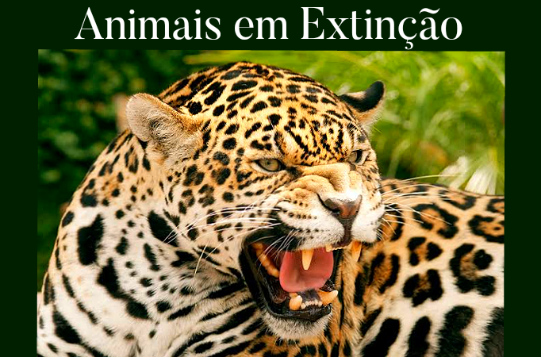

Animais em Extinção


A onça-pintada, o maior felino das Américas, está na lista das espécies ameaçadas de extinção na categoria vulnerável. Esta é uma espécie que pode ser encontrada em diferentes biomas brasileiros, porém é considerada símbolo do Pantanal.É difícil estimar a população na Amazônia e no Pantanal, mas na Mata Atlântica e na Caatinga a espécie está ameaçada.
As principais causas que ameaçam a extinção da onça-pintada está relacionada à caça. Além disso, o desmatamento também reduz o seu habitat natural e compromete a conservação da espécie.Atualmente, estima-se que sua população não ultrapasse 10.000 indivíduos.